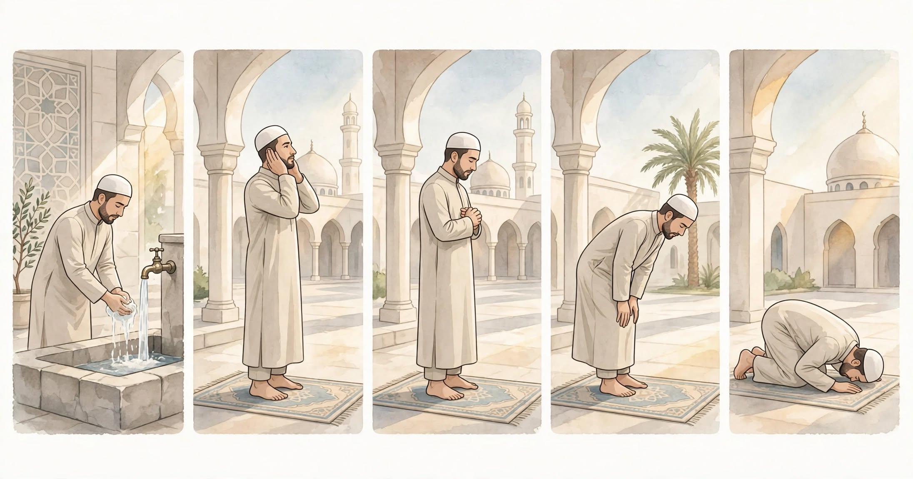

How to Pray Asr Step by Step: Complete Guide for Beginners [2026]

Learning how to pray Asr is the third daily prayer. Asr has 4 rakats like Dhuhr. If you learned how to pray Dhuhr step by step and how to pray Fajr, Asr will be easy. This guide is part of our full how to pray Salah series and 5 daily prayers guide.
Table of Contents
- What is Asr Prayer & When to Pray It?
- How Many Rakats in Asr?
- How to Pray Asr Step by Step
- Common Mistakes
What is Asr Prayer & When to Pray It?
Asr starts when the shadow of an object equals its length and ends before sunset. Check prayer times in Islam for exact timing in your city. You must fulfill conditions of Salah before starting.
How Many Rakats in Asr?
Asr is 4 fard rakats, no sunnah muakkadah after but 4 sunnah ghair muakkadah before. See how many rakats in each prayer for full table.
How to Pray Asr Step by Step (4 Rakats)
Step 1: Wudu & Niyyah
Do wudu and intend Asr.
Step 2: Rakat 1 & 2
Like Dhuhr - Al-Fatiha + short surah, ruku, sujud. Sit for first Tashahhud after 2 rakats. Full steps in how to pray Salah.
Step 3: Rakat 3 & 4
Only Al-Fatiha, then final Tashahhud, Salat Ibrahimiyyah, Salam. Learn duas from what to say in Salah and adhkar after Salah.
📚 Related Prayer Guides
Common Mistakes in Asr
Delaying Asr until sunset and rushing. Avoid common Salah mistakes and keep wudu - check what nullifies wudu.
📖 Explore All Prayer Guides
FAQs
How many rakats in Asr?
4 fard. Details in rakats guide.
What if I miss Asr?
Pray as soon as you remember. See prayer times.